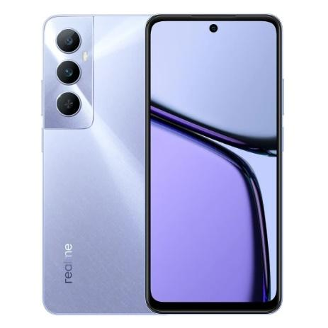

HP MID-RANGE TERBAIK 2024
Jika sedang mencari handphone (HP) mid-range terbaik di 2024, berikut beberapa rekomendasi terbaik dari How to Tekno.
POCO X6 Pro 5G
POCO X6 Pro 5G merupakan salah satu pilihan yang menarik, diantaranya:
- Ponsel mid-range ini menawarkan memori internal besar, yaitu 512GB yang sudah dilengkapi teknologi UFS 4.0 untuk mentransfer data dengan cepat.
- Soal performa, POCO X6 Pro 5G ditenagai prosesor Dimensity 8300 Ultra serta memori RAM sebesar 12GB.
- Ponsel ini mampu menghadirkan kinerja yang sangat lancar, terutama untuk multitasking dan gaming.
- POCO X6 Pro 5G hadir dengan panel AMOLED yang tajam dan jernih.
- Baterai besar berkapasitas 5.000mAh dan fast charging 67W, ponsel ini dapat terisi penuh hanya dalam waktu 43 menit.
Ponsel ini tersedia dengan harga sekitar Rp4.899.000.
Realme 13
Realme 13 hadir sebagai salah satu ponsel mid-range terbaik 2024 karena:
- Mengusung prosesor Snapdragon 685 terbaru.
- Ada dua opsi penyimpanan yang bisa dipilih, yaitu 8GB RAM dengan penyimpanan internal 128GB, serta 8GB RAM dengan ROM 256GB.
- Fitur-fitur lain mencakup layar AMOLED dengan refresh rate 120Hz, kecerahan hingga 2000 nits.
- Baterai besar 5.000mAh. Baterainya bisa diisi dalam waktu singkat karena terdapat fitur 67W SUPERVOOC Charge.
- Keunggulan lain untuk para gamer, yaitu adanya sistem pendingin Vapor Chamber (VC Cooling System). Sistem ini mampu meminimalkan overheat saat pemain sedang bermain mobile game.
- Harga ponsel ini dipatok sekitar Rp2.799.000, termasuk murah untuk spesifikasinya yang unggul.
POCO F6
POCO F6 hadir dengan spesifikasi yang menarik, terutama untuk pengguna yang mencari performa mumpuni di segmen mid-range. Ponsel ini dibekali:
- Prosesor Snapdragon 8s Gen 3 dan menyediakan pilihan memori hingga 512GB serta RAM 12GB.
- Layar AMOLED berukuran 6,67 inci yang mendukung resolusi Full HD+ dan refresh rate 120Hz menghadirkan visual yang halus, sehingga cocok untuk menonton video atau bermain gim.
- Dari segi fotografi, POCO F6 menyajikan kamera utama 50MP dengan sensor Sony IMX882 yang dilengkapi kamera tambahan 8MP. Tak lupa, kamera depan 20MP untuk berswafoto (selfie).
- Pengguna bisa mendapatkan ponsel dengan performa tinggi ini dengan harga sekitar Rp5.199.000.
Realme 12+ 5G
Realme 12+ 5G merupakan salah satu ponsel mid-range dengan desain yang unik karena:

- Ponsel ini menggunakan material kulit imitasi pada bagian belakang yang tidak hanya membuatnya nyaman digenggam, tetapi juga memberikan kesan premium.
- Terkait performa, ponsel ini ditenagai oleh prosesor Dimensity 7050 dan RAM 12GB. Penyimpanan internalnya sendiri sebesar 512GB dan sudah dilengkapi teknologi UFS 2.2 yang stabil untuk menyimpan data.
- Kamera HP ini memiliki resolusi 50MP. Ada beragam fitur sinematik yang bisa dinikmati untuk menambah daya tarik fotografi. Harganya adalah sekitar Rp3.799.000.
Realme C65
Rekomendasi berikutnya adalah HP realme C65:
- HP mid-range ini hadir dengan keunggulan tersendiri berkat sertifikasi 48-month Fluency Certification oleh TÜV SÜD.
- Realme C65 bekerja dengan dorongan prosesor Helio G85 dan dukungan RAM sebesar 8GB, serta memori internal 256GB. Dengan kombinasi tersebut, ponsel ini menghadirkan performa stabil untuk penggunaan sehari-hari.
- Dari segi baterai, Realme C65 memiliki kapasitas 5.000mAh yang didukung pengisian cepat 45W SUPERVOOC Charge, sehingga mampu mengisi daya hingga 50% hanya dalam 30 menit. Harga ponsel ini dipatok sekitar Rp2.499.000 dan menjadikannya pilihan terjangkau bagi pengguna yang mencari ponsel dengan performa tahan lama.

Infinix Note 40
Infinix Note 40 adalah salah satu ponsel mid-range di segmen harga Rp2 jutaan, mari kita tinjau kelebihannya:
- HP ini mengusung layar Flexible AMOLED 6,78 inci dengan resolusi FHD+ 1080×2436, sehingga mampu menampilkan gambar dengan sangat tajam dan detail.
- Chipset MediaTek Helio G99 Ultimate menghadirkan performa andal untuk multitasking dan gaming.
- Ponsel ini dibekali baterai besar 5.000mAh dan pengisian daya 45W FastCharge 2.0 yang didukung pula oleh fitur wireless charging dan reverse charging.
- Soal harga, Infinix Note 40 dijual Rp2.749.000 di berbagai toko online dan offline.